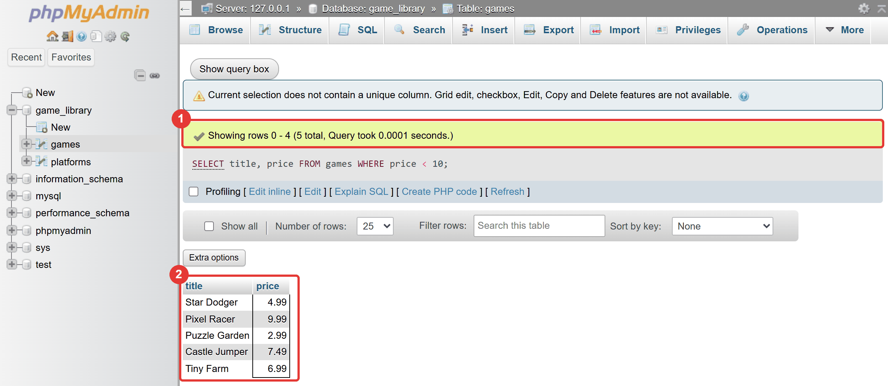
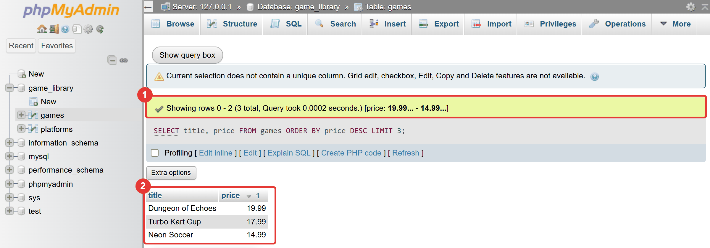

Μάθημα 4: Φιλτράρω και ταξινομώ¶
Βάση δεδομένων: ερωτήματα που διαλέγουν μόνο τις γραμμές που θέλεις, με τη σειρά που θέλεις, και η πρώτη σου συνάρτηση στην Python
Διάρκεια: 2 κύκλοι × περίπου 45′ εργασία (2 διδακτικές ώρες)
Φύλλο εργασίας
Αυτή η σελίδα εξηγεί τις έννοιες. Οι ασκήσεις και οι οδηγίες για κάθε κύκλο βρίσκονται στο Φύλλο εργασίας 4. Δούλεψε με τις δύο σελίδες ανοιχτές.
Αρχεία εργαστηρίου¶
| Αρχείο | Κύκλος |
|---|---|
| 01-where.sql | 1 |
| 02-conditions.sql | 1 |
| 03-sorting.sql | 2 |
| 04-queries.py | 2 |
Η αποστολή¶
Μέχρι τώρα κάθε SELECT έφερνε όλες τις γραμμές ενός πίνακα. Με δέκα παιχνίδια δεν πειράζει. Σε μια
πραγματική βάση με χιλιάδες εγγραφές, όμως, κανείς δεν θέλει «όλα». Θέλει «τα παιχνίδια κάτω από 10 €», «τα τρία
ακριβότερα», «όσα έχουν στον τίτλο τη λέξη Kart». Σήμερα μαθαίνεις να ρωτάς έτσι.
Στο τέλος του μαθήματος τα ίδια ερωτήματα θα τρέχουν από πρόγραμμα Python, με μια συνάρτηση που εμφανίζει το αποτέλεσμα, ώστε να μη γράφεις τον ίδιο κώδικα έξι φορές. Και θυμάσαι το πρόγραμμα του Μαθήματος 3 που έβρισκε το ακριβότερο παιχνίδι με βρόχο; Με τη SQL της σημερινής ώρας το βρίσκεις με μία γραμμή.
Στο τέλος θα μπορείς¶
- να φιλτράρεις γραμμές με
WHEREκαι τους τελεστές σύγκρισης (=,<>,<,>,<=,>=). - να συνδυάζεις συνθήκες με
AND,OR,NOTκαι να χρησιμοποιείς παρενθέσεις. - να χρησιμοποιείς
BETWEENκαιINαντί για μεγάλες αλυσίδες συνθηκών. - να ταξινομείς με
ORDER BY(αύξουσα, φθίνουσα, με πολλές στήλες) και να περιορίζεις τα αποτελέσματα μεLIMIT. - να ψάχνεις με μοτίβα
LIKE(%και_). - να γράφεις τις φράσεις μιας
SELECTμε τη σωστή σειρά. - να εξηγείς γιατί οι συγκρίσεις κειμένου δεν ξεχωρίζουν κεφαλαία από πεζά, και να προσέχεις την παγίδα του ελληνικού και του λατινικού «Α».
- να γράφεις και να καλείς μια συνάρτηση (
def) της Python, για να μην επαναλαμβάνεις κώδικα.
Πριν αρχίσεις¶
- Ξεκίνα τη MySQL από το XAMPP Control Panel. Για τη SQL θα χρειαστείς και τον Apache (phpMyAdmin).
- Έλεγξε ότι η
game_libraryέχει τον πίνακαgamesμε δέκα εγγραφές και τονplatformsμε τέσσερις. Αν λείπει ή διαφέρει, ζήτα από τον εκπαιδευτικό το αρχείο που τη φέρνει στη σωστή κατάσταση. - Φτιάξε έναν φάκελο
04-filter-sortμέσα στον φάκελο των μαθημάτων και κατέβασε εκεί τα τέσσερα αρχεία του πίνακα. Κράτησε ακριβώς τα ονόματα (.sqlκαι.py). - Τα αρχεία
.sqlτα ανοίγεις σε επεξεργαστή κειμένου, συμπληρώνεις τα κενά και αντιγράφεις κάθε ερώτημα στην καρτέλα SQL. Το04-queries.pyτο τρέχεις από το τερματικό του VS Code, όπως στο Μάθημα 3.
Ο κύκλος εργασίας
Πρόβλεψη → εκτέλεση → σύγκριση → εξήγηση. Σήμερα η πρόβλεψη είναι ακόμη πιο χρήσιμη: πριν τρέξεις ένα ερώτημα, πρόβλεψε πόσες γραμμές θα έχει το αποτέλεσμα. Το phpMyAdmin το γράφει πάνω από τον πίνακα («Showing rows 0 - 4 (5 total)»).
Κύκλος 1 — Επιλέγω γραμμές με WHERE¶
Σε αυτόν τον κύκλο μαθαίνεις να λες ποιες γραμμές θέλεις, και τρέχεις τα δύο πρώτα στάδια στο phpMyAdmin.
1.1 Η φράση WHERE¶
Η συνθήκη είναι μια ερώτηση με απάντηση «ναι» ή «όχι», όπως ο έλεγχος ενός if της Python. Η MySQL την ελέγχει
για κάθε γραμμή και κρατά μόνο όσες απαντούν «ναι». Για WHERE price < 10:
title |
price |
price < 10; |
Μπαίνει στο αποτέλεσμα; |
|---|---|---|---|
| Star Dodger | 4.99 | ναι | ✓ |
| Pixel Racer | 9.99 | ναι | ✓ |
| Puzzle Garden | 2.99 | ναι | ✓ |
| Dungeon of Echoes | 19.99 | όχι | ✗ |
| Neon Soccer | 14.99 | όχι | ✗ |
| … | … | … | … |
Το ερώτημα και το αποτέλεσμά του στο phpMyAdmin:

Στο Μάθημα 3 έκανες το ίδιο με for και if στην Python: έφερνες όλες τις γραμμές και τις έλεγχες ένα-ένα. Εδώ το
φιλτράρισμα γίνεται μέσα στη βάση, και στο πρόγραμμά σου φτάνουν μόνο οι γραμμές που χρειάζεσαι.
1.2 Τελεστές σύγκρισης¶
| Τελεστής | Σημαίνει | Παράδειγμα | Γραμμές (από τα δέκα) |
|---|---|---|---|
= |
ίσο | genre = 'Αγωνιστικό' |
2 |
<> ή != |
διαφορετικό | genre <> 'Αγωνιστικό' |
8 |
< |
μικρότερο | price < 10 |
5 |
> |
μεγαλύτερο | price > 15 |
2 |
<= |
μικρότερο ή ίσο | release_year <= 2020 |
4 |
>= |
μεγαλύτερο ή ίσο | release_year >= 2022 |
4 |
Τρεις κανόνες:
- Η ισότητα γράφεται με ένα
=(όχι==της Python). Αν γράψεις==παίρνεις#1064. - Το κείμενο μπαίνει σε μονά εισαγωγικά (
'Αγωνιστικό'), οι αριθμοί χωρίς. - Στη
WHEREσυγκρίνεις στήλη με τιμή:price < 10. Το αντίστροφο (10 > price) δουλεύει κι αυτό.
Κεφαλαία, πεζά και τόνοι δεν μετράνε
Δοκίμασε WHERE genre = 'αγωνιστικο' (πεζά, χωρίς τόνο). Βρίσκει τα δύο «Αγωνιστικό». Η σύγκριση κειμένου
ακολουθεί τη σύνθεση (collation) της στήλης. Η δική μας είναι η utf8mb4_general_ci, και το ci
σημαίνει case insensitive: δεν ξεχωρίζει κεφαλαία από πεζά, και στην πράξη ούτε τους τόνους. Στην Python το
"Παζλ" == "παζλ" θα ήταν False· στη SQL είναι «ίσα».
1.3 AND, OR και NOT¶
Όταν μία συνθήκη δεν αρκεί, τις συνδυάζεις:
| Συνδυασμός | Η γραμμή μπαίνει όταν… | Παράδειγμα |
|---|---|---|
A AND B |
ισχύουν και οι δύο | genre = 'Αγωνιστικό' AND price < 15 |
A OR B |
ισχύει τουλάχιστον μία | genre = 'Παζλ' OR genre = 'Αθλητικό' |
NOT A |
δεν ισχύει η A |
NOT genre = 'Αγωνιστικό' |
Λειτουργούν όπως τα and, or, not της Python. Μία παγίδα, ίδια με της Python: η προτεραιότητα. Το AND
δένει πιο σφιχτά από το OR, όπως ο πολλαπλασιασμός από την πρόσθεση. Ποιο παιχνίδι θα φέρει αυτό το ερώτημα;
SELECT title, genre, price
FROM games
WHERE genre = 'Αγωνιστικό' OR genre = 'Αθλητικό' AND price < 15;
Η MySQL το διαβάζει ως genre = 'Αγωνιστικό' OR (genre = 'Αθλητικό' AND price < 15): όλα τα αγωνιστικά, και
μόνο τα αθλητικά που κοστίζουν κάτω από 15 €. Το αποτέλεσμα είναι τρεις γραμμές, με το Turbo Kart Cup (17.99 €).
Αν θέλεις «αγωνιστικά ή αθλητικά, και φθηνότερα από 15 €», βάλε παρενθέσεις:
Τώρα είναι δύο γραμμές. Όταν μια συνθήκη έχει και AND και OR, γράφε πάντα παρενθέσεις, ακόμη κι όταν δεν
χρειάζονται: διαβάζεται πιο εύκολα και δεν αφήνει περιθώριο λάθους.
1.4 BETWEEN και IN¶
Δύο συντομογραφίες για συνθήκες που θα γράφεις συχνά:
-- τιμή από 5 έως 12 (και τα δύο όρια περιλαμβάνονται)
WHERE price BETWEEN 5 AND 12
-- ίδιο με: price >= 5 AND price <= 12
-- είδος ένα από τρία
WHERE genre IN ('Παζλ', 'Ρόλων', 'Περιπέτεια')
-- ίδιο με: genre = 'Παζλ' OR genre = 'Ρόλων' OR genre = 'Περιπέτεια'
- Το
BETWEENπεριλαμβάνει τα δύο άκρα. ΤοANDεδώ ανήκει στοBETWEENκαι δεν είναι ο λογικός τελεστής. - Το
INπαίρνει μια λίστα τιμών σε παρενθέσεις, χωρισμένες με κόμμα. - Και τα δύο δέχονται
NOT:price NOT BETWEEN 5 AND 12,genre NOT IN ('Παζλ', 'Ρόλων').
1.5 Συνηθισμένα λάθη στη WHERE¶
| Εντολή | Τι γίνεται | Γιατί |
|---|---|---|
WHERE title = Tiny Farm |
#1064 σφάλμα σύνταξης |
το κείμενο θέλει εισαγωγικά (εδώ και κενό) |
WHERE genre = Παζλ |
#1054 - Unknown column 'Παζλ' in 'WHERE' |
χωρίς εισαγωγικά, η MySQL το περνά για όνομα στήλης |
WHERE price == 10 |
#1064 |
το == δεν υπάρχει στη SQL |
WHERE price < 10 AND < 20 |
#1064 |
κάθε μέρος του AND είναι ολόκληρη σύγκριση |
WHERE genre = 'Παζλ' OR 'Αθλητικό' |
κανένα σφάλμα, αλλά βγαίνει μόνο το Παζλ | το 'Αθλητικό' μόνο του δεν είναι σύγκριση |
Η τελευταία γραμμή είναι σιωπηλό λάθος, όπως στο Μάθημα 2. Στην Python το ίδιο λάθος γράφεται
genre == "Παζλ" or "Αθλητικό". Η σωστή γραφή και στις δύο γλώσσες: κάθε μέρος του OR είναι πλήρης σύγκριση
(genre = 'Παζλ' OR genre = 'Αθλητικό'), ή genre IN ('Παζλ', 'Αθλητικό').
Στάδιο 1 — Φιλτράρω με WHERE¶
Άνοιξε το 01-where.sql. Συμπλήρωσε τα έξι κενά (____) και τρέξε τα ερωτήματα ένα-ένα στην καρτέλα SQL.
Πρώτα πρόβλεψε πόσες γραμμές θα έχει κάθε αποτέλεσμα.
-- Στάδιο 1 — Φιλτράρω γραμμές με WHERE.
--
-- Πώς το τρέχεις:
-- 1. Συμπλήρωσε τα κενά (____) σε έναν επεξεργαστή κειμένου.
-- 2. Τρέξε κάθε ερώτημα ΞΕΧΩΡΙΣΤΑ στην καρτέλα SQL της βάσης game_library.
-- 3. ΠΡΩΤΑ πρόβλεψε πόσες γραμμές θα έχει το αποτέλεσμα. Το phpMyAdmin το γράφει πάνω από τον πίνακα:
-- «Showing rows 0 - 4 (5 total)».
-- Ερώτημα 1 (έτοιμο): τα αγωνιστικά παιχνίδια
SELECT title, price
FROM games
WHERE genre = 'Αγωνιστικό';
-- Ερώτημα 2: τα παιχνίδια που κοστίζουν λιγότερο από 10 €
SELECT title, price
FROM games
WHERE price ____ 10;
-- Ερώτημα 3: τα παιχνίδια που κυκλοφόρησαν το 2022 ή αργότερα
SELECT title, release_year
FROM games
WHERE ____ >= ____;
-- Ερώτημα 4: όλα τα παιχνίδια που ΔΕΝ είναι αγωνιστικά (είδος διαφορετικό από «Αγωνιστικό»)
SELECT title, genre
FROM games
WHERE genre ____ 'Αγωνιστικό';
-- Ερώτημα 5: το παιχνίδι με τίτλο «Tiny Farm» (όλες οι στήλες)
SELECT *
FROM games
WHERE ____ = ____;
Στάδιο 2 — Πολλές συνθήκες¶
Άνοιξε το 02-conditions.sql. Συμπλήρωσε τα έξι κενά και τρέξε τα ερωτήματα ένα-ένα. Το ερώτημα 5 έχει την
παγίδα της προτεραιότητας: πρόβλεψε πρώτα πόσες γραμμές θα φέρει.
-- Στάδιο 2 — Πολλές συνθήκες: AND, OR, BETWEEN, IN και παρενθέσεις.
--
-- Τρέξε κάθε ερώτημα ΞΕΧΩΡΙΣΤΑ στην καρτέλα SQL της βάσης game_library, αφού συμπληρώσεις τα κενά (____).
-- ΠΡΩΤΑ πρόβλεψε πόσες γραμμές θα έχει το αποτέλεσμα.
-- Ερώτημα 1 (έτοιμο): αγωνιστικά ΚΑΙ φθηνότερα από 15 €
SELECT title, genre, price
FROM games
WHERE genre = 'Αγωνιστικό' AND price < 15;
-- Ερώτημα 2: είδος «Παζλ» Ή είδος «Αθλητικό»
SELECT title, genre
FROM games
WHERE genre = 'Παζλ' ____ genre = 'Αθλητικό';
-- Ερώτημα 3: τιμή από 5 έως 12 € (και τα δύο όρια περιλαμβάνονται)
SELECT title, price
FROM games
WHERE price ____ 5 ____ 12;
-- Ερώτημα 4: είδος «Παζλ», «Ρόλων» ή «Περιπέτεια», με ένα μόνο έλεγχο
SELECT title, genre
FROM games
WHERE genre ____ ('Παζλ', 'Ρόλων', 'Περιπέτεια');
-- Ερώτημα 5 (έτοιμο): χωρίς παρενθέσεις. Πόσες γραμμές περιμένεις; Πρώτα πρόβλεψε, μετά τρέξ' το.
SELECT title, genre, price
FROM games
WHERE genre = 'Αγωνιστικό' OR genre = 'Αθλητικό' AND price < 15;
-- Ερώτημα 6: θέλουμε (αγωνιστικά Ή αθλητικά) ΚΑΙ φθηνότερα από 15 €. Βάλε τις παρενθέσεις στη σωστή θέση.
SELECT title, genre, price
FROM games
WHERE ____ genre = 'Αγωνιστικό' OR genre = 'Αθλητικό' ____ AND price < 15;
Συνέχισε στο Φύλλο εργασίας, Κύκλος 1.
Κύκλος 2 — Ταξινομώ, περιορίζω, ψάχνω με μοτίβο¶
Σε αυτόν τον κύκλο μαθαίνεις να λες με ποια σειρά και πόσες γραμμές θέλεις, να ψάχνεις με μοτίβα, και γράφεις την πρώτη σου συνάρτηση στην Python.
2.1 Σειρά με ORDER BY¶
Χωρίς ORDER BY, η MySQL επιστρέφει τις γραμμές με όποια σειρά τη βολεύει. Συνήθως είναι η σειρά
εισαγωγής, αλλά δεν υπάρχει καμία εγγύηση. Αν η σειρά έχει σημασία, τη ζητάς ρητά:
ORDER BY priceταξινομεί αύξουσα (το φθηνότερο πρώτο). Η προεπιλογή λέγεταιASC.ORDER BY price DESCταξινομεί φθίνουσα (το ακριβότερο πρώτο).- Με πολλές στήλες, η δεύτερη κρίνει τις ισοπαλίες της πρώτης:
ORDER BY genre, titleταξινομεί κατά είδος και, μέσα σε κάθε είδος, κατά τίτλο. Κάθε στήλη μπορεί να έχει δικό τηςASCήDESC:ORDER BY release_year DESC, title. - Το κείμενο ταξινομείται αλφαβητικά με τους κανόνες της σύνθεσης: τα ελληνικά βγαίνουν στη σωστή σειρά.
2.2 Όριο με LIMIT¶
Το LIMIT n κρατά μόνο τις πρώτες n γραμμές του αποτελέσματος. Μαζί με το ORDER BY βρίσκεις «τους
καλύτερους»:

Το ακριβότερο παιχνίδι είναι η ίδια ερώτηση με LIMIT 1:
Αυτό που έκανες με δέκα γραμμές Python στο Μάθημα 3 (07-most-expensive.py) γίνεται με μία. Και, κυρίως, η βάση
δεν στέλνει στο πρόγραμμα τις άλλες εννέα γραμμές.
Το LIMIT δέχεται και αφετηρία: LIMIT 3, 3 (ή LIMIT 3 OFFSET 3) παραλείπει τις 3 πρώτες γραμμές και
φέρνει τις επόμενες 3. Έτσι φτιάχνονται οι «σελίδες» των αποτελεσμάτων.
2.3 Η σειρά των φράσεων¶
Οι φράσεις μιας SELECT γράφονται πάντα με αυτή τη σειρά:
Δεν είναι υποχρεωτικές όλες, αλλά όσες γράφεις πρέπει να τηρούν τη σειρά. Το ORDER BY price WHERE price < 10
δίνει #1064 με near 'WHERE price < 10'. Ένας τρόπος να το θυμάσαι: ρώτα με τη σειρά «τι, από πού, ποιες, πώς
ταξινομημένες, πόσες».
2.4 Αναζήτηση με μοτίβο: LIKE¶
Όταν δεν ξέρεις ολόκληρη την τιμή, ψάχνεις με μοτίβο. Στο LIKE υπάρχουν δύο ειδικά σύμβολα:
| Σύμβολο | Αντιστοιχεί σε |
|---|---|
% |
οποιονδήποτε αριθμό χαρακτήρων (και κανέναν) |
_ |
έναν ακριβώς οποιονδήποτε χαρακτήρα |
| Μοτίβο | Τι βρίσκει | Παράδειγμα αποτελέσματος |
|---|---|---|
title LIKE 'S%' |
αρχίζει από S | Star Dodger, Space Miners |
title LIKE '%Kart%' |
περιέχει «Kart» | Turbo Kart Cup |
title LIKE '%er' |
τελειώνει σε «er» | Star Dodger, Pixel Racer, Neon Soccer, Castle Jumper |
title LIKE '_i%' |
δεύτερο γράμμα i |
Pixel Racer, Tiny Farm |
title NOT LIKE 'S%' |
δεν αρχίζει από S | οι υπόλοιποι οκτώ |
Όπως στο =, δεν ξεχωρίζουν κεφαλαία από πεζά: το LIKE 's%' βρίσκει τα ίδια παιχνίδια με το LIKE 'S%'.
Το ελληνικό «Α» και το λατινικό «A» είναι διαφορετικά γράμματα
Στο πληκτρολόγιο φαίνονται ίδια. Το genre LIKE 'Α%' με ελληνικό Α βρίσκει τα τρία είδη που αρχίζουν από
Α (Αγωνιστικό δύο φορές και Αθλητικό). Με λατινικό A βρίσκει μόνο το Arcade. Αν ένα ερώτημα «δεν
βρίσκει» κάτι που βλέπεις μπροστά σου, έλεγξε ποια γλώσσα είχε το πληκτρολόγιό σου όταν έγραψες το γράμμα.
Στάδιο 3 — Σειρά, όριο και μοτίβο¶
Άνοιξε το 03-sorting.sql. Συμπλήρωσε τα οκτώ κενά και τρέξε τα ερωτήματα ένα-ένα. Πρόβλεψε πρώτα ποιο
παιχνίδι θα είναι στην πρώτη γραμμή.
-- Στάδιο 3 — Σειρά, όριο και αναζήτηση με μοτίβο: ORDER BY, LIMIT, LIKE.
--
-- Τρέξε κάθε ερώτημα ΞΕΧΩΡΙΣΤΑ στην καρτέλα SQL της βάσης game_library, αφού συμπληρώσεις τα κενά (____).
-- ΠΡΩΤΑ πρόβλεψε ποιο παιχνίδι θα βρίσκεται στην πρώτη γραμμή.
-- Ερώτημα 1 (έτοιμο): από το φθηνότερο στο ακριβότερο
SELECT title, price
FROM games
ORDER BY price;
-- Ερώτημα 2: από το ακριβότερο στο φθηνότερο
SELECT title, price
FROM games
ORDER BY price ____;
-- Ερώτημα 3: τα τρία ακριβότερα παιχνίδια
SELECT title, price
FROM games
ORDER BY price DESC
____ 3;
-- Ερώτημα 4: πρώτα κατά είδος και, μέσα σε κάθε είδος, κατά τίτλο
SELECT genre, title
FROM games
ORDER BY ____, ____;
-- Ερώτημα 5: οι τίτλοι που ΑΡΧΙΖΟΥΝ από S
SELECT title
FROM games
WHERE title LIKE ____;
-- Ερώτημα 6: οι τίτλοι που ΠΕΡΙΕΧΟΥΝ τη λέξη «Kart»
SELECT title
FROM games
WHERE title LIKE ____;
-- Ερώτημα 7 (έτοιμο): οι τίτλοι με δεύτερο γράμμα το i (το _ αντιστοιχεί σε ΕΝΑ οποιοδήποτε γράμμα)
SELECT title
FROM games
WHERE title LIKE '_i%';
-- Ερώτημα 8: από τα παιχνίδια που κοστίζουν λιγότερο από 15 €, οι δύο πιο πρόσφατοι τίτλοι
-- (πρώτα η πιο πρόσφατη χρονιά, και σε ισοπαλία κατά τίτλο). Πρόσεξε τη σειρά των φράσεων.
SELECT title, release_year
FROM games
WHERE ____
ORDER BY release_year DESC, title
LIMIT ____;
2.5 Η πρώτη σου συνάρτηση¶
Στο Μάθημα 3, για κάθε ερώτημα έγραφες execute, fetchall, έναν βρόχο και την εκτύπωση: περίπου δώδεκα γραμμές.
Για έξι ερωτήματα θα ήταν εβδομήντα δύο γραμμές, σχεδόν ίδιες. Η λύση είναι μια συνάρτηση: ένα κομμάτι κώδικα
με όνομα, που το γράφεις μία φορά και το καλείς όσες φορές θέλεις.
def show(cursor, title, sql):
"""Στέλνει το ερώτημα sql και εμφανίζει το αποτέλεσμα κάτω από τον τίτλο title."""
cursor.execute(sql)
rows = cursor.fetchall()
print()
print(title)
print("-" * len(title))
print(" | ".join(cursor.column_names))
for row in rows:
texts = []
for value in row:
texts.append(str(value))
print(" | ".join(texts))
print(f"Γραμμές: {len(rows)}")
Τα κομμάτια του ορισμού:
| Κομμάτι | Τι κάνει |
|---|---|
def |
δηλώνει ότι ορίζεις συνάρτηση |
show |
το όνομά της· με αυτό θα την καλέσεις |
(cursor, title, sql) |
οι παράμετροι: οι τιμές που χρειάζεται για να δουλέψει. Είναι «κενές θέσεις» που γεμίζουν όταν την καλείς |
: και η εσοχή |
το σώμα της συνάρτησης είναι όσες γραμμές έχουν εσοχή |
"""…""" |
η περιγραφή (docstring): τι κάνει η συνάρτηση |
Ο ορισμός δεν εκτελεί τίποτα. Απλώς «μαθαίνει» στην Python τη show. Ο κώδικας τρέχει μόνο όταν την καλέσεις,
δίνοντας ορίσματα με την ίδια σειρά με τις παραμέτρους:
Σε αυτή την κλήση η Python βάζει cursor → cursor, title → "Παιχνίδια του 2023" και sql → το ερώτημα, και μετά
εκτελεί το σώμα. Την επόμενη κλήση με άλλα ορίσματα η sql έχει άλλο ερώτημα και η title άλλον τίτλο.
Μερικές λεπτομέρειες του σώματος:
- Η
cursor.column_namesείναι οι επικεφαλίδες του αποτελέσματος, όπως τις ορίζει τοSELECT. - Το
texts = []φτιάχνει κενή λίστα, και τοtexts.append(str(value))προσθέτει στο τέλος της τη μετατροπή σε κείμενο κάθε τιμής (τοstrχρειάζεται, γιατί οι τιμές μπορεί να είναι αριθμοί ήDecimal). - Το
" | ".join(texts)κολλά τα στοιχεία της λίστας με το" | "ανάμεσά τους:Star Dodger | 4.99. - Οι μεταβλητές που δημιουργείς μέσα στη συνάρτηση (
rows,texts,row) υπάρχουν μόνο όσο τρέχει. Εκτός συνάρτησης δεν τις βλέπεις.
Για ερωτήματα που γράφονται σε πολλές γραμμές χρησιμοποιούμε τριπλά εισαγωγικά, όπως έμαθες στο Μάθημα 3:
show(cursor, "Τα τρία ακριβότερα", """
SELECT title, price
FROM games
ORDER BY price DESC
LIMIT 3
""")
Στάδιο 4 — Ερωτήματα από την Python¶
Άνοιξε το 04-queries.py. Η συνάρτηση show είναι έτοιμη. Συμπλήρωσε τα οκτώ κενά μέσα στα ερωτήματα SQL
και τρέξε το πρόγραμμα. Πρόβλεψε πρώτα πόσες γραμμές θα έχει το αποτέλεσμα κάθε κλήσης.
"""Στάδιο 4 — Ερωτήματα από την Python.
Το πρόγραμμα ορίζει μία συνάρτηση, τη show, που στέλνει ένα ερώτημα στη βάση και εμφανίζει το αποτέλεσμα σε
πίνακα. Μετά την καλεί έξι φορές, με έξι διαφορετικά ερωτήματα SQL: ο ίδιος κώδικας, διαφορετικά ερωτήματα.
Συμπλήρωσε τα οκτώ κενά (____) μέσα στα ερωτήματα SQL.
"""
import mysql.connector
HOST = "localhost"
USER = "root"
PASSWORD = ""
DATABASE = "game_library"
def show(cursor, title, sql):
"""Στέλνει το ερώτημα sql και εμφανίζει το αποτέλεσμα κάτω από τον τίτλο title."""
cursor.execute(sql)
rows = cursor.fetchall()
print()
print(title)
print("-" * len(title))
print(" | ".join(cursor.column_names))
for row in rows:
texts = []
for value in row:
texts.append(str(value))
print(" | ".join(texts))
print(f"Γραμμές: {len(rows)}")
connection = mysql.connector.connect(host=HOST, user=USER, password=PASSWORD, database=DATABASE)
cursor = connection.cursor()
# TODO 1: η συνθήκη: τα παιχνίδια που κυκλοφόρησαν το 2023
show(cursor, "Παιχνίδια του 2023", """
SELECT title, price
FROM games
WHERE ____
""")
# TODO 2: ταξινόμηση κατά τιμή (από το φθηνότερο)
show(cursor, "Φθηνά παιχνίδια (έως 8 €)", """
SELECT title, price
FROM games
WHERE price <= 8
ORDER BY ____
""")
# TODO 3: τα τρία ακριβότερα: φθίνουσα σειρά και όριο γραμμών (δύο κενά)
show(cursor, "Τα τρία ακριβότερα", """
SELECT title, price
FROM games
ORDER BY price ____
LIMIT ____
""")
# TODO 4: τίτλοι που περιέχουν τη λέξη «Kart» ή τη λέξη «Soccer» (δύο κενά, με μοτίβα LIKE)
show(cursor, "Kart ή Soccer", """
SELECT title, genre
FROM games
WHERE title LIKE ____ OR title LIKE ____
""")
# TODO 5: είδος ανάμεσα σε μια λίστα τιμών, και δεύτερο κριτήριο ταξινόμησης (δύο κενά)
show(cursor, "Αγωνιστικά και αθλητικά", """
SELECT title, genre, release_year
FROM games
WHERE genre ____ ('Αγωνιστικό', 'Αθλητικό')
ORDER BY release_year, ____
""")
# Ερώτημα 6 (έτοιμο): ερώτημα σε άλλον πίνακα. Η ίδια συνάρτηση, άλλα δεδομένα.
show(cursor, "Πλατφόρμες από το 2020", """
SELECT name, maker
FROM platforms
WHERE release_year >= 2020
ORDER BY name
""")
cursor.close()
connection.close()
Παιχνίδια του 2023
------------------
title | price
Neon Soccer | 14.99
Turbo Kart Cup | 17.99
Γραμμές: 2
Φθηνά παιχνίδια (έως 8 €)
-------------------------
...
Συνέχισε στο Φύλλο εργασίας, Κύκλος 2.
Έλεγχος πριν ολοκληρώσεις¶
- □ Τα ερωτήματα των Σταδίων 1–3 έτρεξαν και οι προβλέψεις σου για το πλήθος γραμμών ταίριαξαν (ή κατάλαβες γιατί όχι).
- □ Μπορείς να εξηγήσεις τη διαφορά ανάμεσα στο
A OR B AND Cκαι στο(A OR B) AND C. - □ Γράφεις τις φράσεις με τη σωστή σειρά:
SELECT,FROM,WHERE,ORDER BY,LIMIT. - □ Το
04-queries.pyτρέχει και εμφανίζει έξι πίνακες. - □ Μπορείς να πεις τι είναι ο ορισμός, η κλήση, η παράμετρος και το όρισμα μιας συνάρτησης.
- □ Όταν τελείωσες, σταμάτησες τον Apache και τη MySQL.
Για να θυμάσαι¶
- Η
WHEREκρατά τις γραμμές για τις οποίες η συνθήκη ισχύει. Η ισότητα είναι=, η διαφορά<>. - Το κείμενο μπαίνει σε μονά εισαγωγικά. Οι συγκρίσεις κειμένου δεν ξεχωρίζουν κεφαλαία από πεζά και τόνους.
- Το
ANDδένει πιο σφιχτά από τοOR. ΜεANDκαιORμαζί, γράφε παρενθέσεις. BETWEEN a AND bπεριλαμβάνει τα άκρα. ΤοIN (…)είναι συντομογραφία για πολλάOR.- Χωρίς
ORDER BYδεν υπάρχει εγγυημένη σειρά. ΤοDESCαντιστρέφει. ΤοLIMIT nκρατά τις πρώτεςn. - Σειρά φράσεων:
SELECT,FROM,WHERE,ORDER BY,LIMIT. - Στο
LIKE: το%είναι «οτιδήποτε», το_είναι «ένα γράμμα». Προσοχή στο ελληνικό και στο λατινικό «Α». - Μια συνάρτηση ορίζεται με
def, καλείται με ορίσματα και γλιτώνει τον επαναλαμβανόμενο κώδικα.
Λεξιλόγιο¶
συνθήκη, WHERE, τελεστής σύγκρισης, προτεραιότητα, παρένθεση, BETWEEN, IN,
ORDER BY, αύξουσα / φθίνουσα σειρά (ASC / DESC), LIMIT, μοτίβο (LIKE), σύνθεση
(collation), συνάρτηση, ορισμός, κλήση, παράμετρος, όρισμα, docstring.
Δική σου εκδοχή¶
Αν τελειώσεις νωρίτερα, δούλεψε με μία αλλαγή τη φορά και δοκίμαζε μετά από κάθε αλλαγή:
- Πρόσθεσε στο
04-queries.pyένα έβδομο ερώτημα της επιλογής σου (π.χ. παιχνίδια εκτός από κάποιο είδος, μεNOT IN, ή τίτλοι χωρίς «S» στην αρχή, μεNOT LIKE). - Άλλαξε τη
showώστε να τυπώνει και το ερώτημα SQL που έστειλε (πρόσθεσε μία γραμμήprint(sql)). Τι διευκολύνει αυτό όταν ένα ερώτημα δεν δίνει αυτό που περίμενες; - Πρόκληση 1: το
SELECT title FROM games ORDER BY price DESC LIMIT 3, 3;δεν φέρνει τα τρία ακριβότερα. Ποια φέρνει; Πρόβλεψε τα τρία παιχνίδια, μετά τρέξ' το. - Πρόκληση 2: το
WHERE genre = 'Παζλ' OR 'Αθλητικό'δεν δίνει σφάλμα. Τρέξε το μαζί με την εντολήSHOW WARNINGS;(δύο εντολές, χωρισμένες με;, στην ίδια εκτέλεση) και διάβασε το μήνυμα προειδοποίησης. Τι νομίζεις ότι κάνει η MySQL με το'Αθλητικό'όταν το βρίσκει μόνο του σε μια συνθήκη;